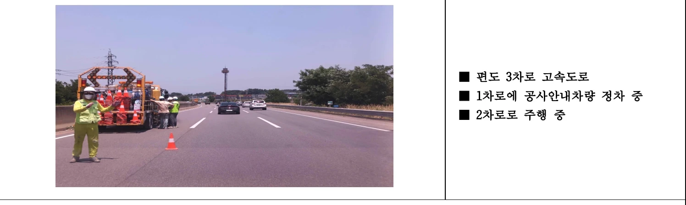

747. Hai cách lái xe nào là an toàn nhất trong tình huống sau?

- ①Vì có xe hướng dẫn thi công trên làn đường số 1 nên tăng tốc và đi nhanh qua.
- ②Từ từ giảm tốc độ và vừa đi vừa chú ý tình huống phía trước.
- ③Bật đèn nháy khẩn cấp để cảnh báo cho các xe đi sau về tình huống nguy hiểm.
- ④Chuyển gấp sang làn đường số 3 để tránh xe hướng dẫn thi công.
- ⑤Vì các xe đi trên đường cao tốc được ưu tiên hơn xe hướng dẫn thi công, nên nhấn còi liên tục để gây chú ý và cứ thế đi qua.
Xem đáp án
Đáp án
② Từ từ giảm tốc độ và vừa đi vừa chú ý tình huống phía trước.
③ Bật đèn nháy khẩn cấp để cảnh báo cho các xe đi sau về tình huống nguy hiểm.
Căn cứ
Ô tô di chuyển với tốc độ cao trên đường cao tốc nên nếu trên đường có xe công trình, xe hướng dẫn thi công phải giảm tốc độ trước và lái xe an toàn. Bạn phải tránh đột ngột chuyển sang làn đường tiếp theo hoặc tăng hoặc giảm tốc độ đột ngột.
Phần căn cứ là bản dịch máy để tham khảo.